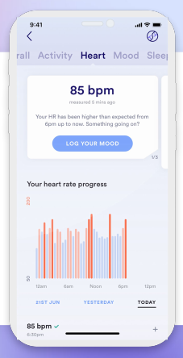
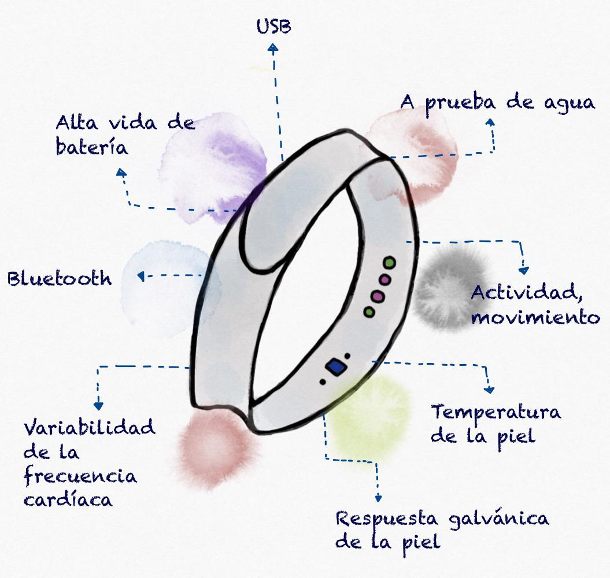

Estrategias de solución
Fig. Imagen hecha en Canva
ChatWith
ChatWith es un aplicativo que, mediante chats con bots, pueda ayudar a usuarios afectados por el COVID-19 y algún trastorno mental o emocional a sobrellevar la ansiedad, el estrés y la depresión. Junto con retos y dinámicas dentro de la aplicación fomenta su uso continuo y disminuye la tasa de deserción.[1]
- El usuario se registra en la aplicación con un nombre de usuario y contraseña, asociando un correo electrónico. Una vez registrado un tutorial donde **Inserte nombre de la mascota aquí** se le enseñará a usar la aplicación. - La primera función que nos muestra será la opción del diario; un espacio en el cual el usuario puede registrar sus actividades diarias, pensamientos, emociones, etc. y con ayuda de una base de datos, la aplicación puede hacer una evaluación del estado de ánimo del paciente basado en las palabras, frases y otras variables usadas por el usuario. - Luego de completar el recorrido por el diario, lo siguiente sería un espacio llamado "Habla con **Inserte nombre de la mascota aquí**" en el cual puedes charlar con un bot, cuyas respuestas están enfocadas a ayudar al usuario a sobrellevar su ansiedad o depresión, y en algunos casos lo incita a buscar ayuda externa. - La siguiente sección serán chats con otros usuarios, garantizando su anonimato mediante pseudónimos ingresados por el usuario. - Para fomentar el uso y poca deserción de la aplicación, se contará con una sección de desafíos en la cual se proponen actividades al usuario, que al completarlas se da como recompensa puntos de nivel, con el cual se aumenta el nivel en el perfil de la aplicación. Todas las actividades propuestas estarán enfocadas en disminuir la ansiedad, el estrés y la depresión del usuario; puede tratarse de ejercicio físico, actividades cognitivas o minijuegos dentro de la app. Se presentaran 3 objetivos diarios de baja complejidad y 2 semanales de complejidad media.
- Permite monitoreo remoto de los datos de salud de los pacientes.
- Funciona a través de una aplicación y dispositivos conectados.
- La adquisición del producto evita procesos administrativos.
Fuente: imagen tomada de google con arreglos propios
Fuente: imagen tomada de BioBeats_Health Data Report_2020.pdf
Bioneck-19
Proporciona una aplicación de monitoreo de salud y bienestar basada en video. Este permite medir los signos vitales de cualquier persona con solo mirar la cámara de un teléfono inteligente.[2]
- Exactitud de grado médico clínicamente probada.
- No se necesitan dispositivos portátiles ni sensores.
Fuente: app
Fuente: elaboración propia
Wrist-19
Aplicación que usa técnicas respaldadas por investigaciones como CBT, DBT, yoga y meditación para apoyar en momentos de estrés, ansiedad, problemas de sueño y bienestar mental. Es una plataforma conversacional que utiliza IA para responder a las emociones que exprese el usuario.
- Posee herramientas que ayudan a construir la confianza, manejo de la ira, gestión de conflictos en las relaciones y más.
- Permite al usuario desahogarse y hablar sobre cualquier desafío diario reflexionar sobre su día.
- Con la ayuda de 20 ejercicios de atención plena ayuda al usuario a relajarse, enfocarse y dormir tranquilo.
Bibliografía
- 1. Taking action [Internet]. [cited 2020 Sep 30]. Available from: https://uploads-ssl.webflow.com/5ea3342eb75c164e5a5b4424/5ea8365442d319318ea9b9f7_Feel_USA_Infographic2.pdf
- 2. Navarro Cantos C. Detección de los niveles de estrés y ansiedad en pilotos aplicando técnicas de Machine Learning [Máster]. Universidad de Sevilla; 2018.
- 3. Dias D, Paulo Silva Cunha J. Wearable Health Devices—Vital Sign Monitoring, Systems and Technologies. Sensors [Internet]. 2018 Jul 25 [cited 2020 Sep 30];18(8):2414. Available from: https://pubmed.ncbi.nlm.nih.gov/30044415/
- 4. Chen Y-C, Hsiao C-C, Zheng W-D, Lee R-G, Lin R. Artificial neural networks-based classification of emotions using wristband heart rate monitor data. Medicine [Internet]. 2019 Aug [cited 2020 Sep 30];98(33):e16863. Available from: https://www.ncbi.nlm.nih.gov/pmc/articles/PMC6831309/
- 5. Jiang L, Gao B, Gu J, Chen Y, Gao Z, Ma X, et al. Wearable Long-Term Social Sensing for Mental Wellbeing. IEEE Sensors Journal [Internet]. 2019 Oct 1 [cited 2020 Sep 30];19(19):8532–42. Available from: http://nrl.northumbria.ac.uk/id/eprint/38524/1/92E8BEBD-E44B-44D2-BB51-83A084CFCBB2.pdf
- 6. FAQ [Internet]. Myfeel.co. 2020 [cited 2020 Sep 30]. Available from: https://www.myfeel.co/faq
- 7.
- 8.
- 9.
- 10.